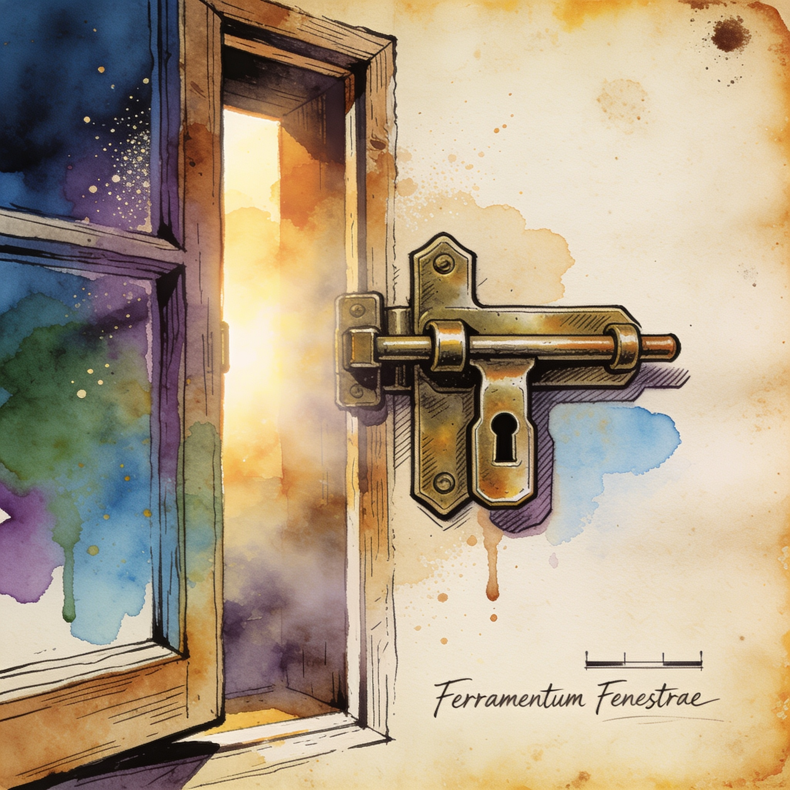

WebGPU local inference
@huggingface/kernels ships 200+ WebGPU kernels for browser-based local AI
Hugging Face released @huggingface/kernels, a JavaScript library for loading and running optimized WebGPU kernels from the Hub, with an initial collection of 207 Apache-2.0 kernels. Against ONNX Runtime Web it showed up to 2.57x faster kernel performance by geometric mean, alongside a new browser-based Fleet benchmarking suite.